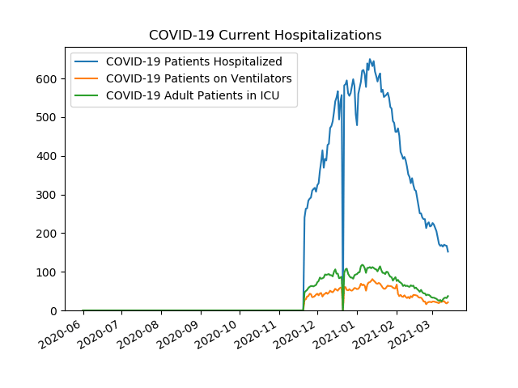
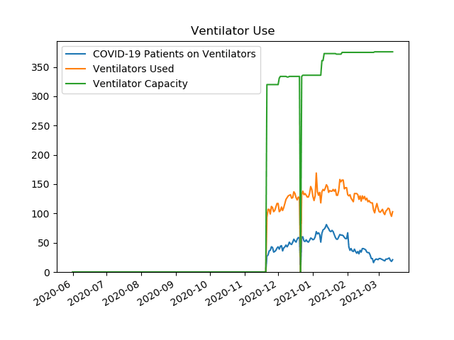
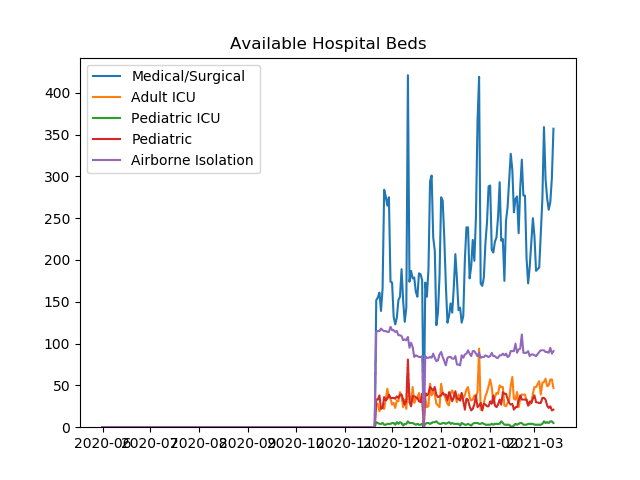
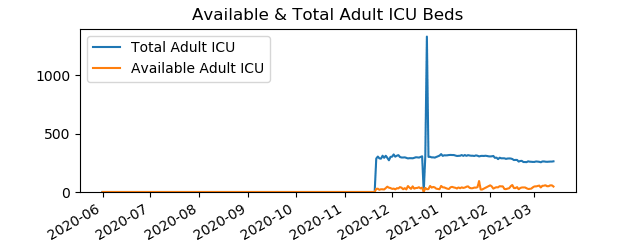
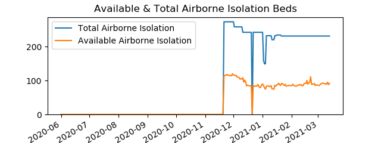
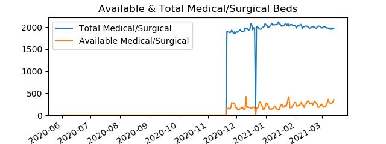
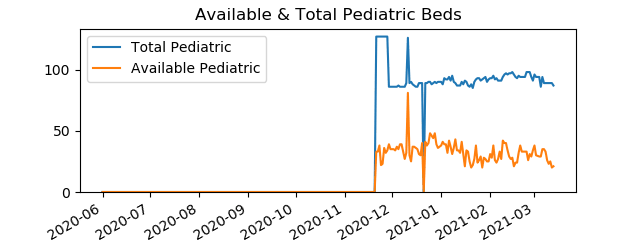
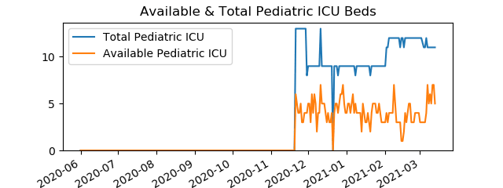

Active COVID-19 Hospitalizations in Northeast HCC
Data is from
PA Dept Of Health
COVID-19 Current Hospitalizations
Date
COVID-19 Patients Hospitalized
COVID-19 Patients on Ventilators
COVID-19 Adult Patients in ICU
20201121
240
27
47
20201201
324
43
73
20210101
479
55
94
20210127
526
63
87

Ventilator Use
Date
COVID-19 Patients on Ventilators
Ventilators Used
Ventilator Capacity
20201121
27
93
320
20201201
43
117
320
20210101
55
129
336
20210127
63
157
375

Available Hospital Beds
Date
Airborne Isolation
Pediatric ICU
Adult ICU
Medical/Surgical
Pediatric
20201121
114
6
27
152
33
20201201
116
5
27
173
35
20210101
90
4
52
275
38
20210127
84
5
22
169
20

Available & Total Adult ICU Beds
Date
Available Adult ICU Beds
Total Adult ICU Beds
20201121
27
287
20201201
27
303
20210101
52
325
20210127
22
310

Available & Total Airborne Isolation Beds
Date
Available Airborne Isolation Beds
Total Airborne Isolation Beds
20201121
114
273
20201201
116
273
20210101
90
242
20210127
84
231

Available & Total Medical/Surgical Beds
Date
Available Medical/Surgical Beds
Total Medical/Surgical Beds
20201121
152
1900
20201201
173
1901
20210101
275
2052
20210127
169
2061

Available & Total Pediatric Beds
Date
Available Pediatric Beds
Total Pediatric Beds
20201121
33
127
20201201
35
86
20210101
38
90
20210127
20
92

Available & Total Pediatric ICU Beds
Date
Available Pediatric ICU Beds
Total Pediatric ICU Beds
20201121
6
13
20201201
5
9
20210101
4
9
20210127
5
9
